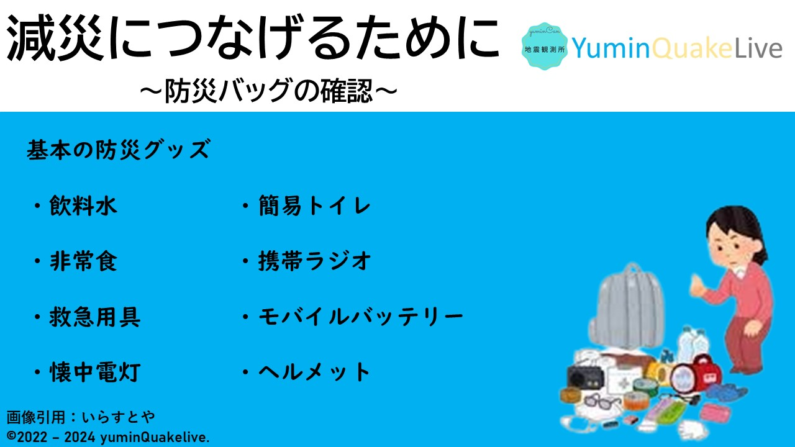

地震が起きたその瞬間、できることはほんの数秒です。
地震以外での自然災害から身を守るためにも日頃の備えが必要です。
日頃の備え
daily preparation
ごあいさつ
2024年3月5日火曜日
みなさんこんにちは、yumin地震観測所のyuminです。
前回の記事「自助と共助」はご覧になられましたか？
ご覧になられていない方はこちらからご覧に慣れますのでぜひご覧ください。
さて、今回の記事は「日頃の備え」についてです。
皆さんのご家庭には非常持ち出し袋はありますか？
あるかわからない方はお家の方などなどに聞いてみてください！
非常用持ち出し袋の中身

基本的な防災グッズ
最低限必要な防災バッグの中身
- 飲料水
- 食料（常温で長期間保存できるもの）
- 貴重品（現金、印鑑、預金通帳、身分証明書のコピーなど）
- 防災ずきん、ヘルメット
- 軍手、手袋
- 救急用品(絆創膏、包帯、常備薬など)
- 懐中電灯
-
乾電池
（少なくとも単1電池から単4電池を2本ずつ用意しておくと良い）
- モバイルバッテリー（乾電池式や手回し発電方式など）
- 携帯電話の充電器
- 携帯ラジオ
- 衣類や下着、毛布、タオルなどの布製品
- 安全靴やスリッパ
- ホイッスル
- 筆記用具（紙、ボールペン、油性マジックなど）
- ビニール袋
- ビニールシート
- めがね(必要な方)
ご家庭でできる日頃の備え
- 避難用の持ち出し品をまとめる
- 家具が倒れてこないように固定をする
- 家族や友達と避難経路や避難場所の確認を行う
- 地域の防災訓練等に参加する
被災状況等によっては大きな荷物を持って避難することが困難なこと
もあります。
そんなときはまず避難することを優先し、可能ならば冷蔵庫などにある
食品やペットボトル飲料など、最低限の食料を確保してから持ち出す
ようにしましょう。